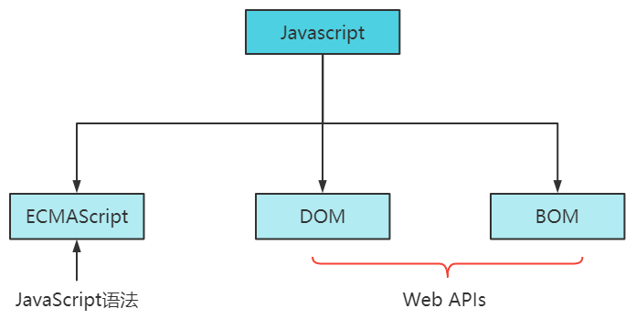
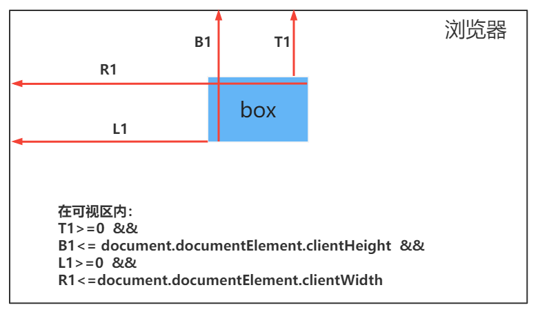

首先我们来回顾下，JS 这门课程需要学习的内容。

- 前面我们学习了 ECMAScript 标准中规定的基本语法中的一部分，还有 JS 高级部分+ES6+Ajax+本地存储等内容，等学完 DOM 和 BOM 后再学。
- 从今天开始，我们开始学习 DOM 和 BOM 相关的内容。
一、API 与 Web API
- API 应用程序接口
API即：
Application Programming Interface，应用程序接口。在编程中可以理解为一些预先定义好的函数，目的是提供应用程序与开发人员基于某软件或硬件得一访问一组例程的能力，而无须考虑其底层的源代码为何、或理解其内部工作机制的细节。- 例程： 是某个系统对外提供的功能接口或服务的集合
- 接口： 站在现实角度，可以理解为两个物体的口子相连接，而无需关心内部实现
简单理解：
- API 是一个被封装好具有一定功能的函数，程序需要使用某种功能时，只需要调用这个函数，就能轻松实现想要完成的功能。
- Web API Web 应用程序接口
Web API：
Web Application Programming Interface在前端可以理解为是浏览器提供的一套操作浏览器功能和页面元素的API，其中包括 DOM 和 BOM。DOM：Document Object Model文档对象模型， 是 JavaScript 操作网页的接口。它定义了访问HTML文档对象的一套属性、方法和事件。BOM：Browser Object浏览器对象模型， 是 JavaScript 操作浏览器的接口，提供一系列与浏览器相关的信息- DOM 与 BOM 是 W3C 国际组织定义的一套 Web 标准接口。
- W3C（万维网联盟）创建于 1994 年，是 Web 技术领域最具权威和影响力的国际中立性技术标准机构。
因为 Web API 很多，所以我们称其为 Web APIs。
二、DOM 概况与获取元素
什么是 DOM
DOM全称
Document Object Model文档对象模型。
Document文档，表示的就是整个HTML网页文档Object对象 ，表示将网页中的每一个部分都转换为一个对象Model模型，表示对象之间的关系，这样方便我们获取对象。
- DOM 是 JavaScript 操作网页的接口，那 JS 具体是如何操作 DOM 的呢 ？
- DOM 最大的特点，就是将整个HTML文档抽象成一个DOM 树，JS 可以通过操作DOM树来实现对HTML文档的添加、删除 、修改等操作
- 我们来下面这段简单的 HTML 代码
><!DOCTYPE html>
><html lang="en">
> <head>
> <meta charset="UTF-8" />
> <meta http-equiv="X-UA-Compatible" content="IE=edge" />
> <meta name="viewport" content="width=device-width, initial-scale=1.0" />
> <title>DOM文档结构树</title>
> </head>
> <body>
> <div>
> <div>我是文本节点</div>
> <img src="" alt="" />
> <h3></h3>
> </div>
> <p></p>
> </body>
></html>
注
- DOM 的最小组成单位叫做节点（node）
- 根据 W3C 的
HTML DOM 标准，HTML 文档中的所有内容都是节点。- DOM 树就是由各种不同类型的节点组成。
节点（node）
- DOM 中的节点的类型有如下七种：
| 节点分类 | 描述 |
|---|---|
| Document 文档节点 | 整个 DOM 树的顶层节点 |
| DocumentType 文档类型节点 | 如 doctype 标签(<!DOCTYPE html>) |
| Element 元素节点 | 网页的各种 HTML 标，如：<p>、<div> |
| Attr 属性节点 | 元素的各种属性，如：title=’标题’、class=’box’ |
| Text 文本节点 | 标签之间或标签包含的文本 |
| Comment 注释节点 | 网页中的注释 |
| DocumentFragment 文档片段 | 文档片段，不存于 DOM 树上，是一种游离态，通常作为仓库来使用 |
document 文档对象
- document 文档对象是
HTMLDocument的实例，表示整个 HTML 页面（HTMLDocument 继承 Document）- document 是 window 对象的属性，因此是一个全局对象
- 控制台 console 可以输入下面两行代码，就可以获得当前网页的文档对象
window.document; // 获取 文档节点对象
document; // 获取 文档节点对象
// 注意区分大小写， document 与 Document是两个不同的东西
// HTMLDocument 继承 Document
- document 对象是 DOM 中最重要的东西，几乎所有DOM 的功能都封装在了 document 对象中
- 我们可以通过 document 对象，来访问元素节点。
访问元素节点的常用方法
- 所谓 “访问” 元素节点，就是指 “得到”、”获取” 页面上的元素节点
- 对节点进行操作，第一步就是要得到它
方法 功能 getElementById() 通过元素 id 名获取到元素 getElementsByTagName() 通过标签名获取元素，返回的是一个数组 getElementsByClassName() 通过 class 名获取元素，返回的是一个数组 querySelector() 通过选择器得到元素,只能得到第一个被找到的元素 querySelectorAll() 通过选择器得到元素，返回的是一个数组
- getElementById()
document.getElementById()的功能是，通过元素的id名来得到元素节点- 不管元素藏的位置有多深，都能通过 id 把它找到
如果页面上有相同 id 的元素，则只能得到第一个 ，id 是唯一的。
><div id="box">我是一个盒子</div>
><div id="box">我是2</div>
><p id="title">我是一个段落</p>
>
><script>
var box = document.getElementById("box");
var title = document.getElementById("title");
console.log(box); // <div id="box">我是一个盒子</div>
console.log(title); // <p id="title">我是一个段落</p>
console.log(typeof box); // object
></script>
- getElementsByTagName()
getElementsByTagName()方法的功能是通过标签名得到节点元素组成的数组,而且得到的是一个类数组，没有数组身上的方法- 所以我们可以通过遍历数组，批量操控每一元素节点
><div id="box1">
> <p>我是p段落标签</p>
></div>
><div id="box2">
> <p>我是p段落标签</p>
> <p>我是p段落标签</p>
> <h3>我是h3标签</h3>
></div>
><script>
> var pList = document.getElementsByTagName("p");
> console.log(pList); // HTMLCollection(3) [p, p, p]
></script>
HTMLCollection 对象，是一个类数组对象，他没有数组身上的方法。
- 即使页面上只有一个指定标签名的节点，也将得到长度为 1 的数组
- 如果没有找到指定标签名的节点，则返回一个空数组
- 任何一个节点元素也可以调用
getElementsByTagName()方法，从而得到其内部的某种类的元素节点
- getElementsByClassName()
getElementsByClassName()方法的功能是通过class 类名得到节点数组- 如果只能获取一个元素，返回长度为 1 的数组，如果没有找到，则返回空数组
- document和节点元素都可以调用
getElementsByClassName()方法，从而得到其内部的某类名的元素节点
><div class="box box1">box1</div>
><div class="box box2">box2</div>
><div id="content">
> <div class="box box3">box3</div>
></div>
>
><script>
// 获取所有class名中包含 box的元素
var box = document.getElementsByClassName("box");
console.log(box);
// 获取id content的元素
var content = document.getElementById("content");
// 获取content中class名为box的元素
var conBox = content.getElementsByClassName("box");
console.log(conBox);
></script>
- querySelector()
- 通过CSS 选择器得到页面当中的元素，不过只能得到第一个被找到的元素
><div class="box">
<p>我是p1</p>
<p>我是p2</p>
></div>
><script>
var p = document.querySelector(".box p");
console.log(p); // <p>我是p1</p>
></script>
- querySelectorAll()
- 通过CSS选择器得到页面当中的元素，返回被找到元素组成的数组
- 如果只有一个符合要求的，也将得到长度为 1 的数组
- 如果没有符合要求的，则返回一个空数组
><div class="box">
> <div class="title">
> <p>我是p</p>
> <p>我是p</p>
> </div>
></div>
>
><div class="title">
> <p>我是p</p>
> <p>我是p</p>
></div>
><script>
> var pList = document.querySelectorAll(".title p");
> console.log(pList); // NodeList(4) [p, p, p, p]
></script>
querySelectorAll 、getElementsByClassName()、getElementsByTagName() 的区别
getElementsByClassName()和getElementsByTagName()方法是可以动态获取元素，也就是当页面上增加或删除元素时，获取的元素个数可以改变- 而
querySelectorAll()是做不到的
获取 body 与 HTML 元素
属性 说明 document.body 获取 body 元素 document.documentElement 获取 html 元素 获取页面中所有元素
document.all获取页面当中所有元素document.getElementsByTagName(“*”)获取页面当中所有元素以上方式几乎不用，只是当做了解即可
onload 方法
- 浏览器在加载一个页面时，是按照自上而下的顺序加载的。
- 如果 JS 写在了 body 前面，那 JS 在获取页面元素时，页面上的元素标签还没有被加载出来，就会造成读取不到内容。
通常 JS 代码一定要写到
</body>节点的前面，否则 JS 无法找到相应 HTML 节点
><script>
> var box1 = document.getElementById("box1");
> console.log(box1); // null 没有获取到元素
></script>
><div id="box1">box</div>
- 如果 JS 代码写在 body 前面，也能正常执行，可以使用
window.onload = function(){}事件，使页面加载完毕后，再执行指定的代码
><script>
// 给window对象添加onload事件监听，onload表示页面都加载完毕了
window.onload = function () {
var box1 = document.getElementById("box1");
console.log(box1);
};
></script>
><body>
> <div id="box1">box</div>
></body>
三、操作元素属性
符合标准的 w3c 属性
常见的符合标准的 w3c 属性有
- id、alt、title
- class、style 更改元素样式属性 比较特殊，我们放在后面单独来讲
- src 、 href 修改图片地址和 a 标签链接地址
- type、value、checked、selected、disabled 表单元素属性
符合标准的 w3c 属性，我们可以直接用
对象.属性名的方式来访问
- id、alt 、title
- id 这个属性在实际中，我们肯定不会去更改他的值
- alt 图片描述属性
- title 提示属性，主要用在 a 标签上
- 获取元素后，打点调用来修改或者新增属性
><img src="../src/3.avif" id="img" />
><a href="http://www.baidu.com" id="link">百度</a>
><script>
> var img2 = document.getElementById("img");
> var a2 = document.getElementById("link");
> img2.id = "img1";
> img2.alt = "美女图片";
> a2.title = "去百度走一趟";
></script>
- src 和 href
- src 属性，用来修改图片的地址
- href 属性，用来修改超链接的地址
- 获取元素后，打点调用来修改或者新增属性
a标签对里的文字用
.innerText调用
><img src="images/img1.png" alt="" id="img" />
><a href="http://www.baidu.com" title="百度" id="link">百度</a>
>
><script>
var img = document.getElementById("img");
var a = document.getElementById("link");
>
img.src = "images/logo.png";
a.href = "http://www.icodingedu.com";
a.innerText = "艾编程";
a.title = "艾编程";
></script>
- 表单属性
- value 表单值
- 获取元素后，调用value值可以获取
value的初始值或输入框中的内容
- 获取元素后，调用value值可以获取
用户名：<input type="text" name="" id="userName" value="123" /><br />
><script>
// 获取用户名
var userName = document.getElementById("userName");
console.log(userName.value);//123
//在输入框输入aabb后
console.log(userName.value);//aabb
></script>
- type 表单类型
- 把
text改成password隐藏密码，也可反向操作
- 把
密码：<input type="text" name="" id="iphone" value="" />
><script>
// 获取电话号码输入框
var iphone = document.getElementById("iphone");
// 写入密码，将电话号码隐藏
iphone.value = "1223333";
iphone.type = "password";
></script>
- checked 单选和复选框选中状态
- 单选框是互斥的
- 默认选中：
- 在对应标签中写上
checked或checked="true" - 打点调用该元素的
checked值修改为true或checked
- 在对应标签中写上
- 单选
><h3>姓别</h3>
><input type="radio" name="sex" id="" value="男" />男
><input type="radio" name="sex" checked="true" id="" value="女" />女
><script>
// 获取单选框
var sex = document.getElementsByName("sex");
// 选中第一个男
//sex[0].checked = true;
//sex[1].checked = "checked";
></script>
- 复选
><h3>喜欢的水果</h3>
><input type="checkbox" name="fruit" id="" /> 苹果
><input type="checkbox" name="fruit" id="" />梨子
><input type="checkbox" name="fruit" id="" />葡萄
><script>
// 获取复选框
var fruit = document.getElementsByName("fruit");
//选中第一个
fruit[0].checked=true;//或者"checked"
//取消选中
fruit[0].checked=false;
></script>
getElementsByName：通过表单的name属性获取元素，得到的是一个类数组元素
- selected 下拉列表元素选中状态
- 修改默认选中元素：
- 方式1：
.selected = true - 方式2：下拉菜单有一个属性：
.selectedIndex可以获取/修改选中元素
- 方式1：
- 修改默认选中元素：
><h3>选择所在城市</h3>
><select name="" id="city">
> <option value="湖南">湖南</option>
> <option value="深圳">深圳</option>
> <option value="上海">上海</option>
></select>
><script>
> // 获取下拉列表
> var city = document.getElementById("city");
> var ops = city.getElementsByTagName("option");
> //修改被选中元素——方式1
> ops[2].selected = true;
> console.log(city.selectedIndex); //2
> //修改被选中元素——方式2
> city.selectedIndex = 0;
> console.log(city.selectedIndex); //0
- disabled 元素是否被禁用
.disabled = true.disabled = "disabled"
><input type="submit" id="submit" value="提交" />
><script>
// 提交按扭
var submit = document.getElementById("submit");
submit.disabled = true; // 禁用
// submit.disabled = "disabled";
></script>
自定义属性
- 自定义属性：由我们自己定义在元素身上的属性
- 自定义属性的目的：用来保存元素标签后期要用到的一些数据内容，一些简单数据存在自定义属性中，后期操作方便。
- 修改自定义属性，可以通过下面方法来操作(旧方法)
方法 说明 getAttribute(key) 获取属性，key 表示要获取的属性名 setAttribute(key,value) 添加或修改属性值，key 表示属性名，value 表示属性值
><div id="box" abs="值" title="我是提示"></div>
><script>
var box = document.getElementById("box");
console.log(box.abs); // undefined
console.log(box.getAttribute("abs")); // 值
console.log(box.getAttribute("title")); // 我是提示
box.setAttribute("mycustom", "自定义属性值");//添加属性
box.setAttribute("id", "box2"); //id="box2"
console.log(box.getAttribute("id"));//box2
></script>
setAttribute(key,value)与getAttribute(key)也是可以操作标准属性
Html5 中自定义属性规范
- Html5 中规定自定义属性名以
data-开头- 使用
data-前缀自定义属性，可以解决属性混乱无管理的现状，区分自定义属性与标准属性
- 设置自定义属性的 2 种方式
- 方式一： 可以直接在 HTML 标签上面书写
><h2 data-weather="sunny">今天是晴天</h2>
<!--
data-weather 自定义属性名
sunny 自定义属性值
-->
<!-- 多个单词组合 -->
><h2 data-birth-date="20230501">今天是我的生日</h2>
如果设置的自定义属性是多个单词组合的形式，需要用中横线-连接
- 方式二： 通过 JS 的
dataset属性来设置.dataset.属性名="属性值"- 属性名中的大写，会自动用
-分隔(驼峰命名法)
><h2>今天是我的生日</h2>
><script>
> var h2 = document.querySelector("h2");
> h2.dataset.birthDate = "20230501";
//data-birth-date="20230501"
></script>
- 获取自定义属性
- 直接通过
对象.dataset.属性名（属性名书写格式：属性去掉data-之后的单词，以驼峰命名） - 如 属性名为
data-ab-cd-fg则访问方式：对象.dataset.abCdFg
- 直接通过
><img src="images/dog.png" data-animal-type="animal" />
><script>
var img = document.getElementsByTagName("img");
//获取自定义属性
var animalType = img[0].dataset.animalType;
console.log(animalType);
></script>
四、操作元素样式
- 操作元素样式的属性有style 、cssText、 className
- 同时 HTML5 提供了classList对象，classList对象身上的方法，用来操作元素的 class 属性，简直完美。
- style 属性
- style 属性用来操作元素的行内样式，他只对行内样式有效
- 获取行内样式的写法：
对象.style.属性名; // 属性名要采用驼峰形式书写 - 修改或添加行内样式的写法
对象.style.属性名 = 属性值; // 属性名要采用驼峰形式书写
><style>
.box {
width: 100px;
height: 200px;
background-color: hotpink;
color: red;
}
></style>
>
><div class="box"></div>
><script>
var box = document.getElementsByClassName("box");
box[0].style.width = "200px";
box[0].style.backgroundColor = "red";
box[0].style.borderTop = "15px solid blue";
>
// 获取样式
console.log(box[0].style.color); // 获取不到,color写在class内
console.log(box[0].style.borderTop); //15px solid blue
></script>
注意事项：
- 操作元素的 style 上的样式，这里的样式权重最高，可以覆盖外部和内嵌样式
- 如果样式写在了class类中，没写在 style 属性中，则通过
对象.style.属性名的方式，是获取不到的- 如果元素要改变的样式量特别多，这种方式就比较麻烦。
- cssText 属性
cssText的本质就是设置 HTML 元素的style属性值- 所以每设置一次 cssText 值，就会把之前的 style 属性中的样式全部覆盖掉
><div
class="box"
style="width: 100px; height: 200px; background-color: red"
></div>
><script>
var box = document.getElementsByClassName("box")[0];
box.style.cssText = "color:blue"; // 覆盖了之前的style样式中的值
></script>
cssText 主要用来合并多次对 CSS 样式的修改，改为一次性处理
- className 属性
- 我们在操作元素的
class样式属性时，不能用对象.属性的方法操作，因为 class 是关键字 - 我们可以通过
对象.className的方式来操作 - 注意事项：
className修改样式，如果是多个样式，样式之间要用空隔隔开
- 我们在操作元素的
><style>
.box {
width: 100px;
height: 100px;
background-color: skyblue;
}
.box1 {
border: 5px dashed tomato;
}
></style>
><body>
<div class="box"></div>
<script>
var box = document.getElementsByClassName("box");
box[0].className = "box box1"; // box与box1之间要有空格
</script>
></body>
- className 操作 CSS 样式有一个很大的缺点，就是我每次更新 class 类名时，都要把所有的类名带上。
- 如果我只想在元素原有的基础上继续添加新的类名、或删除某个类名，能不能不动原有的类名，就能实现。答案肯定是可以的
- 操作 CSS 样式的优先方案
style、cssText、className 三种方式操作 CSS 样式时，性能消耗由低到高的排序分别如下：
- className > cssText > style
原因
- 通过
style属性来操作 CSS 样式，会频繁的触发页面的重排和重绘（DOM 重新渲染）- 通过 style 身上的
cssText属性来操作 CSS 样式，是把多次对 DOM 的操作合并为一次性处理，减少了触发重排和重绘（DOM 的重新渲染）次数- 通过
className属性，本质也是一样的，减少了对 DOM 的操作，多次操作合并为一次性处理，同时 className 中的样式，一开始就准备好了。
- classList 对象
html5为每一个元素新增了一个**classList对象，classList对象保存着控制当前元素类名**的各个方法和属性。
classList 对象身上相关的属性和方法如下表：属性或方法 说明 length 返回类名的个数 add() 在原有的类名基础上添加一个类名，如果这些类已经存在于元素的属性中，那么它们将被忽略。 remove() 在原有的类名基础上,移出某一个类名，即使删除不存在的类值也不会导致抛出异常 toggle() 如果有这个类名，则删除这个类名，返回 false，如果没有则添加上去，返回trueitem() 根据索引 获取类名 contains() 判断元素是否包含某一个类名 replace(oldClass, newClass) 用一个新类值替换已有的类值，替换成功返回 true,替换失败，返回 false
var box = document.getElementsByClassName("box")[0];
console.log(box.classList.length); // 3 类名个数
box.classList.add("box3"); // 追加一个类名box3
box.classList.remove("box2"); // 移除一个类名box2
bool1 = box.classList.toggle("box1"); // 有就移除box1
console.log(bool1); //删除则返回false
bool2 = box.classList.toggle("box1"); // 没有就添加box1
console.log(bool2); //添加则返回true
console.log(box.classList.item(1)); // 索引为0的类名 box
console.log(box.classList.contains("box")); // true
console.log(box.classList.replace("box", "mybox")); // 用mybox 替换box
注
- 假设现在浏览器版本过低，不支持
classList对象，那就需要我们手写相关方法来实现对 class 属性的操作。- 这里我们尝试手写：
add、remove、toggle三个方法。- 我们期望 html 元素可以直接调用这些方法，实现对 class 类名的操作。
- 那就需要确认，我们手写的这些方法要加在哪个构造函数（类）的原型上。因此我们了解 DOM 中各个类的关系。
- DOM 中各类的继承关系图
- 方法：
- 查看实例的构造函数(类)：
实例.__proto__ - 查看继承关系：
- 方法1：在控制台，一层层查看对应的
[[prototype]] - 方法2：输入以下代码：
- 方法1：在控制台，一层层查看对应的
- 查看实例的构造函数(类)：
//元素节点只有构造函数不同，后续都一样
var box = document.getElementsByClassName("box")[0];
//得到它的构造函数：HTMLDivElement
console.log(box.__proto__);
//通过一层层翻找`[[prototype]]`可知继承关系
//HTMLDivElement->HTMLElement->Element->Node->EventTarget->Object;
>
var attr = document.createAttribute("id");
//属性节点：attr.__proto__;//实例->Attr(继承)->Node->EventTarget->Object
var text = document.createTextNode("文本");
//文本节点：text.__proto__;//实例->Text(继承)->CharacterData->Node->EventTarget->Object
var frag = document.createDocumentFragment();
//文档片段：frag.__proto__;//实例->DocumentFragment(继承)->Node->EventTarget->Object
var comment = document.createComment("我是一段注释");
//注释节点：comment.__proto__;//实例->Comment(继承)->CharacterData->Node->EventTarget->Object
结论：
- 我们希望 HTML 元素可以直接打点调用
addClass等方法，实现对 class 属性的操作- 所以这些方法要写在
HTMLElement的原型上。
- 手写 addClass 方法
该方法实现对元素添加对应的 class 类名，如果元素上没有对应 class 类名添加，有的话就不加
- className 属性：
.className，获取元素的class类名，得到的是字符串.className=""修改类名，样式之间要用空隔隔开
split()方法可以使字符串以某种分隔符进行分隔，分隔后的字符串组成一个数组返回includes()方法用来判断一个数组是否包含一个指定的值join()方法将一个数组的所有元素以特定的某种字符连接成一个字符串，并返回这个字符串
- className 属性：
><div class="box box1 box2 box2"></div>
>
><script>
/**
* addClass 方法实现对元素添加对应的class类名，如果元素上没有对应class类名就添加，有就不加
* @param name class类名字符串
*/
HTMLElement.prototype.addClass = function (name) {
if (typeof name !== "string") return;
// 获取当前对象上的class类名
var className = this.className;
// 以空格分隔成一个数组
var classArr = className.split(" ");
// 判断传过来的类名在不在当前数组中，如果不存在，就添加
if (!classArr.includes(name)) {
classArr.push(name); // 将类名添加到数组中
}
var newClassName = classArr.join(" "); // 将数组元素以空格拼接成字符串
this.className = newClassName;//修改类名
};
var box = document.querySelector(".box");
box.addClass("box4");//谁调用this就是谁
></script>
- 手写 removeClass 方法
- 该方法实现移除元素上对应的 Class 类名，如果有就移除，如果没有不做处理
><div class="box box1 box2 box2"></div>
>
><script>
/**
* addClass 方法实现对元素添加对应的class类名，如果元素上没有对应class类名就添加，有就不加
* @param name class类名字符串
*/
HTMLElement.prototype.removeClass = function (name) {
if (typeof name !== "string") return;
// 获取当前对象上的class类名
var className = this.className;
// 以空格分隔成一个数组
var classArr = className.split(" ");
// 获取所查找类名的下标
var index = classArr.indexOf(name);
//如果找不到，则退出
if (index === -1) return;
//while循环删除所有 给定类名
while (index !== -1) {
classArr.splice(index, 1);
// 要考虑傻逼模式，就是他本来就出现了两个相同的类名
index = classArr.indexOf(name, index); //从刚删除的下标开始查找该元素
}
var newClassName = classArr.join(" "); // 将数组元素以空格拼接成字符串
this.className = newClassName;//修改类名
};
var box = document.querySelector(".box");
box.removeClass("box4");//谁调用this就是谁
></script>
- 手写 toggleClass 方法
- 该方法实现自动判断是给元素添加还是删除对应的 Class 类名，如果元素存在对应 Class 类名就删除，否则就添加
><div class="box box1 box2 box2"></div>
><script>
/**
* toggleClass 该该方法实现自动判断是给元素添加还是删除对应的Class类名，如果元素存在对应Class类名就删除，否则就添加
* @param name class类名字符串
*/
HTMLElement.prototype.toggleClass = function (name) {
// 获取当前对象上的class类名
var className = this.className;
// 以空格分隔成一个数组
var classArr = className.split(" ");
// 判断传过来的类名在不在当前数组中，如果不在，就添加，存在，找到对应下标然后删掉
var index = classArr.indexOf(name);
if (index === -1) {
// 没有就添加
classArr.push(name);
} else {
// 存在，就删除
// 要考虑傻逼模式，就是他本来就出现了两个相同的类名
var _index = index;
while (_index !== -1) {
classArr.splice(_index, 1);
_index = classArr.indexOf(name, _index);
}
}
var newClassName = classArr.join(" "); // 将数组元素以空格拼接成字符串
this.className = newClassName;
>
// 处理返回值
if (index === -1) return true;
return false;
};
>
var box = document.querySelector(".box");
box.toggleClass("box2");
box.toggleClass("box1");
box.toggleClass("box3");
></script>
注：
- 以上所有方法，都没有办法获取 class 类名或 id 中定义的 css 样式。
- getComputedStyle 方法
getComputedStyle()方法，获取元素的计算样式，但不能修改样式。- 语法：
var style = window.getComputedStyle(element, [pseudoElt]); element用于获取计算样式的元素pseudoElt指定一个要匹配的伪元素的字符串。对普通元素省略（或null）- 返回的style是一个实时的
CSSStyleDeclaration（css 样式声明）对象（它是一个 CSS 声明块，CSS 属性键值对的集合），当元素的样式更改时，它会自动更新本身。
><style>
.box {
width: 200px;
height: 200px;
background-color: red;
}
.box1 {
font-size: 20px;
color: yellow;
line-height: 100px;
}
></style>
></head>
>
><div class="box box1" id="mybox">我是css盒子</div>
><script>
> var mybox = document.getElementById("mybox");
> var style = getComputedStyle(mybox, null); //得到CSS访问声明
> console.log(style);
> for (var i = 0; i < style.length; i++) {
> key = style[i];
> //CSS样式及值
> console.log(key + "=" + style.getPropertyValue(key));
> }
></script>
- 访问 CSS 属性值 3 种方式
// 访问方式一
// propName 属性名，正常书写
window.getComputedStyle(element, [pseudoElt]).getgetPropertyValue(propName);
>
// 访问方式二
// propName 属性名 要采用驼峰命名方式
window.getComputedStyle(element, [pseudoElt]).propName;
>
// 访问方式三
// propName 属性名，正常书写
window.getComputedStyle(element, [pseudoElt])[propName];
><style>
.box {
width: 200px;
height: 200px;
background-color: red;
}
.box1 {
font-size: 20px;
color: yellow;
line-height: 100px;
}
></style>
><div class="box box1" id="mybox">我是css盒子</div>
>
><script>
var mybox = document.getElementById("mybox");
var style = getComputedStyle(mybox, null);
console.log(style.height);
console.log(style.backgroundColor);
console.log(style.lineHeight);
>
console.log(style.getPropertyValue("height"));
console.log(style["background-color"]);
console.log(style.getPropertyValue("line-height"));
></script>
- 获取伪元素样式
- 语法：
var style = window.getComputedStyle(element, 伪元素字符串);
- 语法：
><style>
#mybox {
width: 200px;
height: 200px;
background-color: red;
}
#mybox::after {
content: "我是伪元素内容";
color: yellow;
}
></style>
>
><div id="mybox"></div>
><script>
var mybox = document.getElementById("mybox");
var style = getComputedStyle(mybox, "::after");
console.log(style.color);
console.log(style.content);
></script>
五、获取元素尺寸
偏移尺寸
- 以下 5 个属性，都与元素的偏移尺寸有关 ,并且都是只读的
- offsetWidth
- offsetHeight
- offsetParent
- offsetLeft
- offsetTop
- offsetWidth 与 offsetHeight
- 以下属性为只读的，每次访问都会重新计算
属性 说明 offsetWidth 返回一个元素的布局宽度；标准盒模型下，包括：width、border、padding、滚动条宽；怪异盒模型下为：width offsetHeight 返回一个元素的布局高度；标准盒模型下，包括：height、border、padding、滚动条宽；怪异盒模型下为：height
- 以下属性为只读的，每次访问都会重新计算
><style>
* {
margin: 0;
padding: 0;
}
.box {
width: 200px;
height: 200px;
padding: 30px;
border: 10px solid red;
margin: 20px;
}
.box1 {
width: 100px;
height: 100px;
padding: 30px;
border: 10px solid blue;
margin: 20px;
/* box-sizing: border-box; */
}
></style>
>
><div class="box">
> <div class="box1"></div>
></div>
>
><script>
var box1 = document.querySelector(".box1");
var _width = box1.offsetWidth;
var _height = box1.offsetHeight;
console.log(_width); // width+padding+border=100+60+20=180
console.log(_height); // height+padding+border=100+60+20=180
>
// 如果box1更改为border-box，则最后输出结果为100 100
></script>
- offsetParent
- 此属性为只读属性，每次访问都会重新计算
- 返回离当前元素最近的定位祖先元素或最近的
table,td,th,tbody元素 - 在 Webkit 中，
- 如果当前元素为隐藏的（该元素或其祖先元素的
style.display为”none”），该属性返回 null。 - 或者该元素的
style.position被设为”fixed”，则该属性返回 null。
- 如果当前元素为隐藏的（该元素或其祖先元素的
><style>
.box {
position: absolute;
}
.box1 {
/* display: none; */
position: relative;
}
.box3 {
/* position: fixed; */
display: none;
}
></style>
> <!--绝对定位-->
><div class="box">
<!--相对定位-->
<div class="box1">
<!--未定位-->
<div class="box2">
<div class="box3"></div>
</div>
</div>
></div>
><script>
// 获取box3元素
var box3 = document.querySelector(".box3");
// 获取离box3最近的定位祖先元素
var parent = box3.offsetParent;
console.log(parent); // null
></script>
- offsetLeft 和 offsetTop
- 以下两属性为只读属性，每次访问都会重新计算
- 本质上可以简单理解为定位元素的top/left值，但也会受到margin的影响
属性 说明 offsetLeft 它返回当前元素(左边框)相对于其offsetParent元素的左边框内壁的距离 offsetTop 它返回当前元素(上边框)相对于其offsetParent元素的上边框内壁的距离
><style>
* {
margin: 0;
padding: 0;
}
body {
padding: 100px;
}
.box1 {
margin: 50px;
padding: 20px;
border: 5px solid blue;
width: 200px;
height: 200px;
position: relative;
}
.box2 {
border: 2px solid red;
height: 150px;
}
.box3 {
width: 100px;
height: 100px;
position: absolute;
border: 10px solid skyblue;
margin-top: 50px;
margin-left: 30px;
left: 20px;
top: 50px;
}
></style>
>
><div class="box1">
<div class="box2">
<div class="box3"></div>
</div>
></div>
>
><script>
// 获取box3元素
var box3 = document.querySelector(".box3");
// 与离他最近的定位祖先元素左内边距的距离
var _left = box3.offsetLeft; // left + margin-left = 20 + 30 = 50
// 与离他最近的定位祖先元素上内边距的距离
var _top = box3.offsetTop; // top + margin-top = 50 + 50 = 100
console.log(_left, _top);
></script>
- 计算元素与页面偏移量
- 如果要计算一个元素与页面的左偏移量,则需要把
- 当前元素与他
offsetParent的offsetLeft offsetParent的左边框宽度offsetParent的offsetParent元素的offsetLeftoffsetParent的offsetParent元素的做边框宽度- 一层层相加，直到根元素(body)，body的
offsetParent是null一个元素与页面的上偏移量同理可得
- while 循环版
function getElementLeft(el) {
// 获取当前元素左偏移量
var left = el.offsetLeft;
// 获了当前元素的offsetParent
var parent = el.offsetParent;
// 如果 offsetParent 存在，则一直获取,计算他的offsetLeft值，如果不存在，则终止
while (parent) {
left += parent.offsetLeft; // 与每一轮元素的父元素与其定位父元素左边距离累加
// 计算父元素左边框大小
style = getComputedStyle(parent, null);
border = parseInt(style.borderLeftWidth); // 过滤单位部分，只取数字部分
// 把左边框累加进去
left += border;
parent = parent.offsetParent;
}
// 最终返回获取的left值
return left;
}
var box1 = document.querySelector(".box1");
console.log(getLeft(box1));
- 递归版
function getElementLeft(el) {
// 获取当前元素左边距
var left = el.offsetLeft;
// 获了当前元素的offsetParent
var parent = el.offsetParent;
// 如果 offsetParent 存在，则一直获取,计算他的offsetLeft值，如果不存在，则终止
if (parent) {
// 计算父元素左边框大小
style = getComputedStyle(parent, null);
border = parseInt(style.borderLeftWidth); // 过滤单位部分，只取数字部分
// 把左边框累加进去
left += border;
left += getElementLeft(parent);
}
return left;
}
var box1 = document.querySelector(".box1");
console.log(getLeft(box1));
- 总结
- 以下 5 个属性都与元素的偏移尺寸相关
重点强调
- 以上偏移尺寸属性都是只读的，每次访问都会重新计算。因此，应该尽量减少查询它们的次数。
- 我们可以把查询的值保存在变量中，供后面使用，这样就可以避免影响性能。
案例
- 案例 1：求两元素中心点之间的距离
- 两个元素相对于同一个父元素定位，现在我们要求这两个元素中心点之间的距离。
// 求两点之间的距离
// obj1与obj2分别表示上图中 box1与box2
function getDistance(obj1, obj2) {
var a =
obj1.offsetLeft +
obj1.offsetWidth / 2 -
(obj2.offsetLeft + obj2.offsetWidth / 2);
var b =
obj1.offsetTop +
obj1.offsetHeight / 2 -
(obj2.offsetTop + obj2.offsetHeight / 2);
return Math.sqrt(a * a + b * b);
}
- 开平方：
Math.sqrt()
- 案例 2：找出与当前元素最近的一个元素
- 我们需要找到所有元素与当前元素的距离，然后再从中找出距离最小的那个元素(案例1)
- 我们可以新建一个数组，用来保存每个元素及每个元素与当前元素中心点的距离
- 数组结构如下
var elementArr = [
{
element: li1, // html元素
distance: 30, // 与当前元素的最近距离
},
{
element: li2,
distance: 50,
},
];
- 最后找出数组中 distance 值最小的那一个对象中的 element 元素
// for循环遍历elementArr数组，找出数组中距离最小的那个元素，然后返回
var minElement = elementArr[0];
for (var j = 0; j < elementArr.length; j++) {
if (elementArr[j].distance < minElement.distance) {
minElement = elementArr[j];
}
}
return minElement.element; // 返回最小的距离的那个对象
- 代码实现：
><body>
> <div class="container">
> <div class="box box1">box1</div>
> <div class="box box2">box2</div>
> <div class="box box3">box3</div>
> <div class="box box4">box4</div>
> </div>
>
> <script>
//通过数组下标查询
var conatiner = document.querySelector(".container");
var box = document.querySelectorAll(".container .box");
>
// 找出与obj元素距离最近的元素
function findNearest(obj) {
var elementArr = [];
var len = box.length;
// 遍历每个元素，计算每个元素于obj的中心位置，然后保存到数组中
for (var i = 0; i < len; i++) {
// 当前被用来比较的obj，不用存到数组中，要排除
if (box[i] !== obj) {
// 计算两中心点距离
var centerDistance = getDistance(box[i], obj);
// 把这个元素和对应中心点距离保存到数组中
var el = {};
el.element = box[i];
el.distance = centerDistance;
elementArr.push(el);
}
}
>
// for循环遍历elementArr数组，找出数组中距离最小的那个元素，然后返回
var minElement = elementArr[0];
for (var j = 0; j < elementArr.length; j++) {
if (elementArr[j].distance < minElement.distance) {
minElement = elementArr[j];
}
}
return minElement.element; // 返回最小的距离的那个对象
}
>
console.log(findNearest(box[2]));
>
// 计算两个元素中心点位置
function getDistance(obj1, obj2) {
var x =
obj1.offsetLeft +
obj1.offsetWidth / 2 -
(obj2.offsetLeft + obj2.offsetWidth / 2);
>
var y =
obj1.offsetTop +
obj1.offsetHeight / 2 -
(obj2.offsetTop + obj2.offsetHeight / 2);
>
return Math.sqrt(x * x + y * y);
}
> </script>
></body>
- 方法2：通过类名查询——见HTML文档
// 获取与目标元素同级的兄弟元素
var children = obj.parentNode.children;
客户端尺寸
- 以下两个属性为元素的客户端尺寸，属性为只读的，每次访问都会重新计算
属性 说明 clientWidth 表示元素的内容区宽，在标准盒模型下，包括 width + padding，不包括border + margin + 滚动条clientHeight 表示元素的内容区高，在标准盒模型下，包括 height + padding，不包括border + margin + 滚动条
><style>
* {
margin: 0;
padding: 0;
}
.box {
width: 200px;
height: 200px;
padding: 30px;
border: 10px solid red;
margin: 20px;
}
></style>
>
><div class="box">
> <div class="box1"></div>
></div>
>
><script>
var box = document.querySelector(".box");
var w = box.clientWidth; // width + padding = 200 + 60 = 260
var h = box.clientHeight; // height + padding = 200 + 60 = 260
console.log(w, h);
></script>
滚动尺寸
滚动尺寸，提供了元素内容滚动相关的信息。有以下四个属性
- scrollWidth
- scrollHeight
- scrollLeft
- scrollTop
- scrollWidth 与 scrollHeight
- 若子元素宽度大于父盒子，那
scrollWidth就是：子元素宽度+父盒子padding - 若子元素宽度小于父盒子，那
scrollWidth就是父元素clientWidth(width+padding-滚动条宽度)
- 若子元素宽度大于父盒子，那
| 属性 | 说明 |
|---|---|
| scrollWidth | 元素内容宽度的一种度量，包括由于overflow溢出而在屏幕上不可见的内容；如果没有水平滚动条，其它大小与 clientWidth相同 |
| scrollHeight | 元素内容高度的度量，包括由于overflow溢出导致的视图中不可见内容；如果没有垂直滚动条，其它大小与 clientHeight相同 |
><style>
.box {
width: 200px;
height: 100px;
border: 2px solid red;
padding: 50px;
overflow: scroll;
}
.box1 {
width: 800px;
height: 800px;
<!-- width: 100px; -->
<!-- height: 500px; -->
background-color: skyblue;
}
></style>
>
><div class="box">
> <div class="box1">
滚动的内容滚动的内容滚动的内容滚动的内容滚动的内容滚动的内容滚动的内容滚动的内容
> </div>
></div>
><script>
var box = document.querySelector(".box");
var _w = box.scrollWidth;
var _h = box.scrollHeight;
console.log(_w, _h); // 900 900
<!-- console.log(_w, _h); // 279 600 -->
></script>
- scrollLeft 和 scrollTop
scrollLeft和scrollTop为 可读可写 属性属性 说明 scrollLeft 获取或设置一个元素的内容水平滚动的距离；如果元素没有产生水平方向滚动条，那 scrollLeft = 0；设置scrollLeft的值小于 0，scrollLeft 被设为0；如果设置了超出这个容器可滚动的值，scrollLeft 会被设为最大值 scrollTop 获取或设置一个元素的内容垂直滚动的距离；如果元素没有产生垂直方向滚动条，那 scrollTop = 0；如果scrollTop的值小于 0，scrollTop 会被设为0；如果设置了超出这个容器可滚动的值，scrollTop 会被设为最大值
><style>
.box {
width: 200px;
height: 100px;
border: 2px solid red;
padding: 50px;
overflow: scroll;
border: 50px solid khaki;
}
.box1 {
width: 800px;
height: 800px;
background-color: skyblue;
}
></style>
>
><div class="box">
> <div class="box1">
滚动的内容滚动的内容滚动的内容滚动的内容滚动的内容滚动的内容滚动的内容滚动的内容
> </div>
></div>
>
><script>
var box = document.querySelector(".box");
box.onscroll = function () {
console.log(box.scrollTop); // 打印滚动条滚动的高度
console.log(box.scrollLeft); // 打印滚动条滚动的宽度
};
>//修改滚动距离(根据scrollWidth/height得到滚动条宽高)
// 滚动条，滚动到底部
box.scrollTop = 721; // 800-100+21=721 要注意，不要多减了滚动条的高度
// 滚动条，滚动到最右边
box.scrollLeft = 621; // 800-200+21=621 要注意，不要多减了滚动条的宽度
></script>
确定元素尺寸
- 浏览器在每个元素上都暴露了
getBoundingClientRect()方法，返回一个DOMRect 对象- 该对象提供了元素的大小及其相对于视口（可视区）的位置
相关属性如下：
| 属性 | 说明 |
|---|---|
| left、x | 元素左边框相对于可视区左边的距离 |
| top、y | 元素上边框框相对于可视区顶部的距离 |
| right | 元素右边框相对于可视区左边的距离 |
| bottom | 元素底边框相对于可视区顶部的距离 |
| height | 元素的高，包括 height + padding + border |
| width | 元素的宽，包括 width + padding + border |
><style>
body {
margin:0;
height: 3000px;
}
.box {
width: 100px;
height: 100px;
border: 2px solid red;
padding: 20px;
border: 20px solid khaki;
}
></style>
>
><div class="box"></div>
>
><script>
var box = document.querySelector(".box");
var domRect = box.getBoundingClientRect();
console.log(domRect); // 打印 DOMRect对象
// 遍历对象
for (key in domRect) {
if (typeof domRect[key] !== "function") {
// 过滤掉方法，只留下属性
console.log(key + ":" + domRect[key]);
}
}
>
// 滚动浏览器窗口
window.onscroll = function () {
var domRect = box.getBoundingClientRect();
console.log(domRect);
};
></script>
案例
- 如何判断两个元素发生了碰撞（经典面试题）
- 相对于浏览器的位置或相对于同一父元素
- 用
getBoundingClientRect()方法
><div class="box1"></div>
> <div class="box2"></div>
>
><script>
function isBump(obj1, obj2) {
var domRect1 = box1.getBoundingClientRect();
var T1 = domRect1.top;
var B1 = domRect1.bottom;
var L1 = domRect1.left;
var R1 = domRect1.right;
var domRect2 = box2.getBoundingClientRect();
var T2 = domRect2.top;
var B2 = domRect2.bottom;
var L2 = domRect2.left;
var R2 = domRect2.right;
if (L2 > R1 || T1 > B2 || L1 > R2 || T2 > B1) return false;
return true;
}
var box1 = document.querySelector(".box1");
var box2 = document.querySelector(".box2");
isBump(box1, box2);
></script>
- 用偏移尺寸
function isBump(obj1, obj2) {
var L1 = obj1.offsetLeft;
var R1 = L1 + obj1.offsetWidth;
var T1 = obj1.offsetTop;
var B1 = T1 + obj1.offsetHeight;
var L2 = obj2.offsetLeft;
var R2 = L2 + obj2.offsetWidth;
var T2 = obj2.offsetTop;
var B2 = T2 + obj2.offsetHeight;
if (L2 > R1 || L1 > R2 || T2 > B1 || T1 > B2) {
return false; // 未碰撞，返回false
} else {
return true; // 碰撞，返回true
}
}
- 判断元素是否在可视区（经典面试题）
- 判断一个元素是不是在可视区，只有元素全在可视区，才算是在可视区内
- 在浏览器可视区内
// 判断元素是否是在可视区内，只有当元素全部在可视区内才算是在可视区内
function isElementInViewport(el) {
var rect = el.getBoundingClientRect();
var T1 = rect.top;
var B1 = rect.bottom;
var L1 = rect.left;
var R1 = rect.right;
return (
T1 >= 0 &&
B1 <= document.documentElement.clientHeight &&
L1 >= 0 &&
R1 <= document.documentElement.clientWidth
);
}
>
> // 测试，自行在页面加一个.box的div
> var box = document.querySelector(".box");
> window.onscroll = function () {
> console.log(isElementInViewport(box));
> };
- 在父级盒子可视区内
function isInViewport(el) {
var T1 = el.offsetTop;
var B1 = T1 + el.offsetHeight;
var L1 = el.offsetLeft;
var R1 = L1 + el.offsetWidth;
var PH = el.offsetParent.clientHeight;
var PW = el.offsetParent.clientWidth;
return T1 >= 0 && L1 >= 0 && B1 <= PH && R1 <= PW;
}
var box1 = document.querySelector(".box1");
console.log(isInViewport(box1));
六、节点操作
接下来我们来学习与节点相关的操作，在开始学习 DOM 的时候，我们提到过 DOM 的节点类型有以下 7 种
节点类型
| 节点分类 | 描述 |
|---|---|
| Document 文档节点 | 整个 DOM 树的顶层节点 |
| DocumentType 文档类型节点 | 如 doctype 标签(<!DOCTYPE html>) |
| Element 元素节点 | 网页的各种 HTML 标，如：<p>、<div> |
| Attr 属性节点 | 元素的各种属性，如：title='标题'、class='box' |
| Text 文本节点 | 标签之间或标签包含的文本 |
| Comment 注释节点 | 网页中的注释 |
| DocumentFragment 文档片段 | 文档片段，不存于 DOM 树上，是一种游离态，通常作为仓库来使用 |
如何检测节点的类型呢 ？其实每一个节点对象都有以下三个属性：
- nodeName 节点名
- nodeType 节点类型
- nodeValue 节点值
节点类型 nodeName nodeType nodeValue 文档节点 #document 9 null 元素节点 标签名 1 null 属性节点 属性名 2 属性值 文本节点 #text 3 文本内容
节点关系
- 考虑所有节点
- 文本节点
#text（即实是空白的文本）也属于节点。标签与标签之间有文本节点
页面节点之间存在以下关系关系 考虑所有节点 子节点 childNodes 父节点 parentNode 第一个子节点 firstChild 最后一个子节点 lastChild 前一个兄弟节点 previousSibling 后一个兄弟节点 nextSibling
- 文本节点
><div class="box">
> <h3 class="title">我是h3标签</h3>
> <p class="p1">我是p标签</p>
> <div class="item">我是item</div>
></div>
><script>
> var box = document.querySelector(".box");
> console.log(box.childNodes);
> console.log(box.parentNode); //body
> console.log(box.firstChild); //#text
> console.log(box.lastChild); //#text
> var p1 = document.querySelector(".p1");
> console.log(p1.previousSibling); //#text
> console.log(p1.nextSibling); //#text
></script>
注意点：文本节点也属于节点
- 而我们实际开发中，我们常常希望获取的是元素类型的节点，所以文本类型的节点给我们带来了很大的干扰。
- 只考虑元素节点
- 实际上在 DOM 中还提供了一些只考虑元素节点的属性，如下表
- 我们把考虑所有节点的属性与只考虑元素节点的属性作如下对比
关系 考虑所有节点 只考虑元素节点 子节点 childNodes children 父节点 parentNode parentNode 第一个子节点 firstChild fristElementChild 最后一个子节点 lastChild lastElementChild 前一个兄弟节点 previousSibling previousElementSibling 后一个兄弟节点 nextSibling nextElementSibling
><div class="box">
> <h3 class="title">我是h3标签</h3>
> <p class="p1">我是p标签</p>
> <div class="item">我是item</div>
></div>
><script>
> var box = document.querySelector(".box");
> var p1 = document.querySelector(".p1");
//只考虑元素节点
console.log(box.children);
console.log(box.firstElementChild); //h3
console.log(box.lastElementChild); //item
console.log(p1.previousElementSibling); //h3
console.log(p1.nextElementSibling); //item
></script>
- 手写 children 方法
实现思路
- 用
当前节点.childNodes获取所有子节点，然后遍历所有子节点，判断节点的类型nodeType 是否为 1 - 如果为 1，则把这个节点添加到数组中
- 最后遍历完，把数组作为返回值返回。
- 用
HTMLElement.prototype._children = function () {
// this 指向，谁调用_children 那this就是谁
var nodes = this.childNodes;
var elementArr = [];
// 过滤节点类型，只留下元素类型节点
for (var i = 0; i < nodes.length; i++) {
if (nodes[i].nodeType === 1) {
// 是元素类型节点，保存
elementArr.push(nodes[i]);
}
}
return elementArr;
};
var box = document.querySelector(".box");
console.log(box._children());
- 手写 prevElementSibling 方法
实现思路
当前节点.previousSibling- 如果返回值为
null，说明没有上一个元素兄弟节点，直接将返回值null返回 - 如果返回值不为
null，要判断节点类型是否为元素节点，即判断返回节点.nodeType === 1是否成立 - 如果不成立，则继续用
返回的节点.previousSibling，一直重复上面过程，直到返回节点.nodeType === 1成立或返回值为null，就不再继续查找了。
HTMLElement.prototype._prevElementSibling = function () {
// this，谁打点调用这个方法，this是谁
var prevElement = this.previousSibling; // 找上一个兄弟节点
// if(!prevElement) return null;
// 如果返回的兄弟节点不为null 且节点类型不等于1，说明当前兄弟节点不是元素类型节点，需要继续向上查找。
//顺序不能调换，因为如果prevElement是null，调用nodeType会报错
while (prevElement && prevElement.nodeType !== 1) {
prevElement = prevElement.previousSibling;
// if (!prevElement) return null;
}
return prevElement; // 如果上面为null，直接返回null,如果不是，返回对应元素节点
};
修改节点内容
- 改变元素节点中的内容可以使用两个相关属性：
- innerHTML：更改元素的内容，更改的内容能以HTML语法的形式显示
- innerText：更改的内容，更改的内容只能以纯文本的形式显示
><div class="box"></div>
><div class="box"></div>
>
><script>
var box = document.getElementsByClassName("box");
box[0].innerHTML = "<h3>我是h3标签</h3>";
box[1].innerText = "<h3>我是h3标签</h3>";
></script>
节点创建与移动
- DOM 中提供了以下方法，用来创建节点，并将创建好的节点插入到页面当中
| 操作节点方法 | 作用 |
|---|---|
| document.createElement(‘标签名’) | 用来创建一个指定的元素节点对象，并将创建好的对象作为返回值 |
| document.createTextNode(‘文本内容’) | 用来创建一个文本节点对象，并将创建好的对象作为返回值。 |
| 父节点.appendChild(‘子节点对象’) | 用来向父节点的最后面添加一个新的子节点。 |
| 父节点.insertBefore(‘新节点’,’旧节点’) | 将新创建的”孤儿节点”插入到页面原有的节点的前面 |
document.createElement()
document.createElement()方法用于创建一个指定tagName的HTML元素- 在创建元素之前，会将传入的tagName转化为小写，即生成的标签名是小写名
- 创建出来的节点是一个“孤儿节点”，他并不在 DOM 树上，而是独立存在的。
- 所以我们必须使用
appendChild()或insertBefore()方法将孤儿节点插入到 DOM 树上 var myDiv = document.createElement("div"); // 创建一个标签名为div的元素节点
document.createTextNode()
- 用来创建一个文本节点对象，并将创建好的对象作为返回值
var text = document.createTextNode(data);- text 是一个文本节点。
- data 是一个字符串，包含了要放入文本节点的内容
appendChild()
- 该方法将一个节点附加到指定父节点的子节点列表的末尾处
- 如果某个节点已经拥有父节点，在被传递给此方法后，它首先会被移除，再被插入到新的位置
- 这意味着，一个节点不可能同时出现在文档的不同位置
返回值：
appendChild()返回的是被附加的子元素
element.appendChild(child);
>
// element 将节点追节到的那个父节点
// child 要追加给父节点的节点（通通是一个元素节点）
- 代码演示：
//获取页面元素
var ul = document.querySelector("ul");
//将div插入到ul的最后面
var div = document.createElement("div");
ul.appendChild(div);
>
//将文本节点插入到ul的最后面
var pt = document.createTextNode("我是一个文本节点");
ul.appendChild(pt);
>
//将文本节点插入到li中
var li = document.createElement("li");
ul.appendChild(li);
li.appendChild(pt);
- insertBefore()
- 方法在参考节点之前插入一个拥有指定父节点的子节点
- 如果被插入节点已经有父节点，则会从当前位置移动到新插入位置
返回值：返回被插入的子节点
parentNode.insertBefore(newNode, referenceNode);parentNode是参考节点的父节点如果
referenceNode为null则newNode将被插入到子节点的末尾
- 功能一：创建新元素，插入到指定元素前
><ul>
> <li>1</li>
> <li>2</li>
> <li>3</li>
></ul>
><script>
//获取ul
var oul = document.querySelector("ul");
//创建li元素
var li1 = document.createElement("li");
// 创建文本元素
var liText = document.createTextNode("我是新创建的li文本");
// 将文本元素插入到li1中
li1.appendChild(liText);
// 将li1插入到第二个li前面
oul.insertBefore(li1, oul.children[1]);
></script>
- 功能二：移动元素
><ul>
> <li>1</li>
> <li>2</li>
> <li>3</li>
></ul>
><script>
//获取ul
var oul = document.querySelector("ul");
//获取li元素
var li = document.getElementsByTagName("li");
//将最后一个li移动到最前面
oul.insertBefore(li[3], li[0]);
//如果第二个参数为null，新节点将移动到父节点的最后面
oul.insertBefore(li[1], null);
></script>
- 综合代码
><ul>
> <li>1</li>
> <li>2</li>
> <li>3</li>
></ul>
><script>
// 获取元素
var ul = document.querySelector("ul");
var li = document.getElementsByTagName("li");
//创建节点
var div = document.createElement("div");
// 修改/新建节点内容
div.innerHTML = "<h3>我是idv中的h3标签</h3>";
// 插入到页面中,appendChild是移到父元素最后面
ul.appendChild(div);
// 移动节点：将新建元素插到li[1]前面
ul.insertBefore(div, li[1]);
></script>
案例
- 请动态创建出一个 15 行 10 列的表格
- 方式1：创建table,tr,td标签
><div class="table1"></div>
><script>
// 获取元素
function creatTable1(rows, columns, el) {
var table = document.createElement("table");
for (var i = 1; i <= rows; i++) {
// 创建行
var tr = document.createElement("tr");
for (var j = 1; j <= columns; j++) {
// 创建列
var td = document.createElement("td");
// 将列插入行中
tr.appendChild(td);
}
// 将行插入表格中
table.appendChild(tr);
}
// 将表格插入到页面中
el.appendChild(table);
}
var table1 = document.querySelector(".table1");
creatTable1(15, 10, table1);
></script>
- 方式2：创建ul,li,span标签
><div class="table2"></div>
><script>
// 获取元素
function creatTable2(rows, columns, el) {
var ul = document.createElement("ul");
for (var i = 1; i <= rows; i++) {
// 创建行
var li = document.createElement("li");
for (var j = 1; j <= columns; j++) {
// 创建列
var span = document.createElement("span");
// 将列插入行中
li.appendChild(span);
}
// 将行插入ul中
ul.appendChild(li);
}
// 将表格插入到页面中
el.appendChild(ul);
}
var table2 = document.querySelector(".table2");
creatTable2(5, 5, table2);
></script>
span要转换为行内元素
- 案例 2：请制作九九乘法表
- 列数与行数一致
- 表格内插入文字：
innerText
><div class="mytable"></div>
><script>
// 创建表格
var table = document.createElement("table");
for (var i = 1; i <= 9; i++) {
// 创建行
var tr = document.createElement("tr");
for (var j = 1; j <= i; j++) {
// 创建列，输入文字
var td = document.createElement("td");
td.innerText = i + "*" + j + "=" + i * j;
// 将td插入行中
tr.appendChild(td);
}
// 将行插入表格
table.appendChild(tr);
}
var mytable = document.querySelector(".mytable");
// 将表格插入页面
mytable.appendChild(table);
></script>
- 案例 3：创建电影座位号
- 根据需求，创建几行几列的电影座位号
关键点： - 座位号：用累加器
- 顺序是从下往上，所以用
insertBefore
- 根据需求，创建几行几列的电影座位号
><div class="table"></div>
><script>
function getSeats(rows, columns, el) {
var ul = document.createElement("ul");
var sum = 0;
for (var i = 1; i <= rows; i++) {
// 创建行
var li = document.createElement("li");
for (var j = 1; j <= columns; j++) {
// 创建列
var div = document.createElement("div");
sum++;
div.innerText = sum;
li.appendChild(div);
}
ul.insertBefore(li, ul.children[0]);
}
el.appendChild(ul);
}
var table = document.querySelector(".table");
getSeats(5, 5, table);
></script>
innerHTML 与 createElement 的效率问题
innerHTML更改元素的内容，更改的内容能以 HTML 语法的形式显示createElement用于动态创建 HTML 元素，然后结合appendChild将元素插入到页面中这两种方式都可以动态创建 HTML 元素，那一种效率更高呢 ？我们通过一个案例来分析
- 在页面动态创建 1000 个 li，插入到页面中
><ul class="list"></ul>
><script>
var oUl = document.querySelector(".list");
>
//innerHTML实现
console.time("innerHTML");
for (var i = 1; i <= 1000; i++) {
oUl.innerHTML += "<li>这是第" + i + "条新闻</li>";
}
console.timeEnd("innerHTML"); // 238.225830078125 ms
>
// createElement实现
console.time("createElement");
for (var j = 1; j <= 1000; j++) {
var oLi = document.createElement("li");
oLi.innerText = "这是第" + j + "条新闻";
oUl.appendChild(oLi);
}
console.timeEnd("createElement"); //3.586669921875 ms
>
//innerHTML优化版
var oUl = document.querySelector(".list");
console.time("innerHTML");
var str = "";
for (var i = 1; i <= 1000; i++) {
str += "<li>这是第" + i + "条新闻</li>";
}
oUl.innerHTML += str;
console.timeEnd("innerHTML"); // 0.52294921875 ms
></script>
分析：以上代码中
innerHTML的执行效率明显比createElement的方式要低很多，原因在于
- 每次迭代都要设置一次
innerHTML，在设置innerHTML前还要先读取innerHTML。而且每次读取和插入都是把之前的所有节点读取出来。- 而
createElement每次迭代，只是把新创建的元素插入到之前元素的后面。- 所以我们最后的优化版是通过一个字符串来拼接所有内容，然后再一次性的插入到页面中。
innerHTML、createElement 总结
说明 innerHTML 在操作时相对结构复杂，可读性不强，如果内容较少，可以使用，不过要注意把内容拼接成字符串，一次性插入到页面；同时，如果内容为用户输入时，要考虑安全问题 createElement 创建元素相对复杂些，但可读性强，如果内容较多，建议使用这种方式 innerHTML 安全问题
- 如果页面中需要提供用户输入的信息，那建议不要使用
innerHTML。因为有可能会造成XSS攻击。 - 所谓XSS攻击全称是
'Cross Site Scripting'跨站脚本。 - 是指黑客往 HTML 文件中或者 DOM 中注入恶意脚本，从而在用户浏览页面时利用注入的恶意脚本对用户实施攻击的一种手段。
2015 年喜马拉雅就被爆出了对应的
XSS 漏洞，是因为用户在设置专辑名称时，服务器对关键字过滤不严格，可以将专辑名设置为一段Javascript。
- 如果页面中需要提供用户输入的信息，那建议不要使用
删除节点
DOM 中删除一个子节点，返回删除的节点。
var oldChild = node.removeChild(child);
child是要移除的那个子节点。node是child的父节点。oldChild保存对删除的子节点的引用。oldChild === child注意：节点不能主动删除自己，必须由父节点删除它
><div class="box">
> <h3 class="title">我是标题</h3>
></div>
><script>
var box = document.querySelector(".box");
var h3 = document.querySelector(".title");
>
// 删除h3标签，方法一:先找到父节点，然后删除其子节点
// var _h3 = box.removeChild(h3);
// console.log(_h3);
>
// 删除h3标签，方法二：通过自身调用parentNode，将自身删除
h3.parentNode.removeChild(h3);
></script>
更推荐使用
.parentNode的方式找到父节点
- 删除一个元素的所有子节点
><ul class="list">
> <li>1</li>
> <li>2</li>
> <li>3</li>
> <li>4</li>
> <li>5</li>
> <li>6</li>
> <li>7</li>
></ul>
>
><script>
//方法1：
var oUl = document.querySelector(".list");
// 如果有第一个子元素，就将他给删除
// while (oUl.firstChild) {
// oUl.removeChild(oUl.firstChild);
// }
>
// 最简单的方法
oUl.innerHTML = "";
></script>
节点的替换（修改）
replaceChild方法用指定的节点替换当前节点的一个子节点，并返回被替换掉的节点parentNode.replaceChild(newChild, oldChild);newChild：用来替换oldChild的新节点。如果该节点已经存在于 DOM 树中，则它首先会被从原始位置删除。oldChild： 被替换掉的原始节点。parentNode是oldChild的父节点
><ul>
> <li>第一个li</li>
> <li>第二个li</li>
> <li>第三个li</li>
> <li>第四个li</li>
></ul>
>
><script>
// 获取页面元素
var oul = document.getElementsByTagName("ul")[0];
//用最后一个元素替换新的元素
var firstli = oul.children[0];
var lastli = oul.children[3];
oul.replaceChild(lastli, firstli);
>
// 创建新的元素来替换
var oli = document.createElement("li");
oli.innerHTML = "<p>我是新创建的</p>";
oli.title = "我是新创建的";
oul.replaceChild(oli, oul.children[1]);
></script>
- 案例：交换两个元素在节点中的位置（阿里面试题）
- 实现思路
- 假设要交换第 1 个 li和第 4 个 li
- 我们可以先创建一个新的节点
newNode，插入到第 1 个 li 前面，用来占位（记录第 1 个 li 的位置） - 然后用第一个 li来替换第 4 个 li，在替换前，要先把第 4 个 li 保存起来，供后面使用
- 最后用第 4 个 li来替换之前新创建的节点
newNode - 如果传过来的节点中，有一个不存在，则返回
false，如果替换成功，则返回true注意：
insertBefore和replaceChild的父级元素是被替换的元素
><div class="box">box</div>
><ul class="list">
> <li>第一个li</li>
> <li>第二个li</li>
> <li>第三个li</li>
> <li>第四个li</li>
></ul>
>
><script>
function changeOfPosition(obj1, obj2) {
// 如果传过来的节点，有一个不存在，就不做任何操作
if (!obj1 || !obj2) return false;
// 首先创建一个新节点
var newNode = document.createElement("div");
// 把新创建的节点插入到 obj1的前面
obj1.parentNode.insertBefore(newNode, obj1);
// 用obj1替换obj2,返回obj2
obj2.parentNode.replaceChild(obj1, obj2);
// 用obj2替换newNode,为什么不用obj1的父级，而要用newNode
// 在上面用obj1替换obj2了，所以obj1的父级此时变成了obj2的父级
newNode.parentNode.replaceChild(obj2, newNode);
return true;
}
>
var liList = document.querySelectorAll(".list li");
var box = document.querySelector(".box");
// 交换第1个和第3个元素位置
changeOfPosition(box, liList[3]);
></script>
克隆节点
cloneNode方法返回调用该方法的节点的一个副本。- 也就是克隆节点，克隆出来的节点是 “孤儿节点”,只是存在内存中，没有插入页面
var dupNode = node.cloneNode(deep);node将要被克隆的节点dupNode克隆生成的副本节点deep是否采用深度克隆，可选参数
- 如果为 true，则该节点里的所有后代节点也都会被克隆
- 如果为 false，则只克隆该节点本身(壳子)
在早期规范中，
deep的默认值是true，现在的新规范里，把默认值变成了false
所以考虑兼容问题，最好在克隆时把这个参数带上。
><div class="box">
> <ul>
<li>第一个li</li>
<li>第二个li</li>
<li>第三个li</li>
<li>第四个li</li>
> </ul>
></div>
>
><script>
// 获取页面元素
var box = document.getElementsByClassName("box");
// var box2 = box[0].cloneNode(); // 浅克隆
var box2 = box[0].cloneNode(false); // 浅克隆
console.log(box2);
var box3 = box[0].cloneNode(true); // 深克隆
console.log(box3);
document.body.appendChild(box2);
document.body.appendChild(box3);
></script>
温馨提示：
- 如果克隆的节点，设置了
id名，则克隆后要修改 id 的名字，确保 id 的唯一性- 克隆一个元素节点会拷贝它所有的属性以及属性值，当然也就包括了属性上绑定的事件（比如onclick=”alert(1)”），但不会拷贝那些使用
addEventListener()方法或者node.onclick = fn这种用JavaScript动态绑定的事件。
DocumentFragment
DocumentFragment文档片段接口，表示一个没有父对象的最小文档对象。- 它被作为一个轻量版的
Document使用，就像标准的document一样，存储由节点（nodes）组成的文档结构。与document相比，最大的区别是它不是真实 DOM 树的一部分，它的变化不会触发 DOM 树的重新渲染，且不会对性能产生影响。
- 他具有真实 DOM 的一切方法和属性，所以我们可以像操作真实 DOM 一样来操作他
- 你可以把他理解成虚拟节点对象，他的作用是充当其它要被添加到真实文档节点的仓库。而他自己永远不会被添加到真实的文档对中
><ul id="list"></ul>
><script>
var oUl = document.getElementById("list");
// 创建一个文档片段，此时还没有插入到真实DOM树中，其存在内存中
var fragment = document.createDocumentFragment();
>
// for循环创建5个li，然后插入到ul中
for (var i = 0; i < 4; i++) {
var oLi = document.createElement("li");
oLi.innerText = "第" + i + "个li";
// 将创建的DOM先放在文档片段中，这样就不会造成频繁的操作真实DOM
fragment.appendChild(oLi);
}
// 一次性将创建的5个oLi插入到真实的DOM树中
oUl.appendChild(fragment);
></script>
DocumentFragment 文档片段的主要功能：
- 可以将频繁的 DOM 操作理改为一次性 DOM 操作，从而减少了页面的重排和重绘（减少 DOM 渲染的次数）